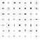
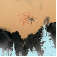
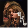
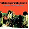
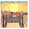
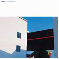
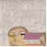
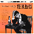
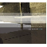

|  |
15 |
Herbert Scale
“Think of it as avant-garde composer John Cage trying his hand at disco and getting it right.”-- NOW Magazine
|
|  |
14 |
Comets on Fire Avatar
“They’re the grounded, fatherly, constantly surprising yin to Dungen’s flashy yang, able to stare through the green smoke of their existence but pay tribute to its presence all the same.” -- Dusted Magazine
|
|  |
13 |
Mew And the Glass-Handed Kites
“These are some of the only guys around who still believe in hard-rock Valhalla, the kind of lavish, stratospheric, fairy-tale prog that’s less about making aging boys geek out and more about making young girls swoon.”
-- Pitchfork Media
|
|  |
12 |
Acid Mothers Temple & the Melting Paraiso U.F.O. Have You Seen the Other Side of the Sky?
“As far as their epics go, this is one for the upper tier.”-- Brainwashed
|
|  |
11 |
Daedelus Daedelus Denies the Day’s Demise
“…the predominantly Latin rhythms give Daedelus a convenient focus for his energies, preventing him from losing the precision that makes the album such a brisk and personable experience.” -- Pop Matters
|
|  |
10 |
Caribou Start Breaking My Heart / Up in Flames
“…heard in their entirety, these stellar packages highlight a somewhat logical path of mild genius from Dan’s early, heavily electronic IDM days to his psychedelic, shoegazing folktronica present.” -- Tiny Mix Tapes
|
|  |
9 |
MSTRKRFT The Looks
“Daft Punk better watch the metal plating on their backs, because there are
two shiny new robots in town, and they are, to put it bluntly and incredibly
daftly, f*cking awesome.” -- KCPR San Luis Obispo |
 |
8 |
Oneida Happy New Year
“Listening to Happy New Year is pleasure absolute, playing through for hours before anyone thinks to change it.” -- cokemachineglow
|
|  |
7 |
The Husbands There’s Nothing I’d Like More Than To See You Dead
“Like an American translation of Holly Golightly, The Husbands juggle the gristle of garage blues with all the concerns of pretty-voiced pop.” -- Aversion
|
|  |
6 |
Ryuichi Sakamoto Bricolages
“Remix albums are only as good as their mixers, but Sakamoto has chosen a solid team that makes Bricolages his most successful remix project.”
-- All Music |
 |
5 |
Small Sails Hunter / Gatherer EP
“gorgeous post-electronic melodies” -- A Tune A Day
|
|
4 |
Ratatat Classics
“…while sometimes Classics sees the group straying from their conceptual center, it’s never without Ratatat’s unmistakable identity and indelible gentle humor—traits that might be one and the same.” -- Stylus Magazine
|
 |
3 |
BOAT Songs You Might Not Like
“…playful, catchy-as-hell pop jams that will lodge themselves into your heads and your hearts and refuse to come out.” -- Gorilla Vs. Bear
|
 |
2 |
Cut Chemist The Audience’s Listening
“Chemist takes audiences on an invigorating sonic journey that skips deliriously from genre to genre and is animated throughout by an infectious sense of rhythm and a prankish sense of humor.” -- The Onion A.V. Club
|
 |
1 |
The Knife Silent Shout
“Silent Shout is an album of intense, pungent evocations; macabre dreams, naked loneliness, risk, safety and loss; desperation, disconnection and yearning… This is one of the most rich and accomplished albums of recent times. Essential.” -- Drowned In Sound
|